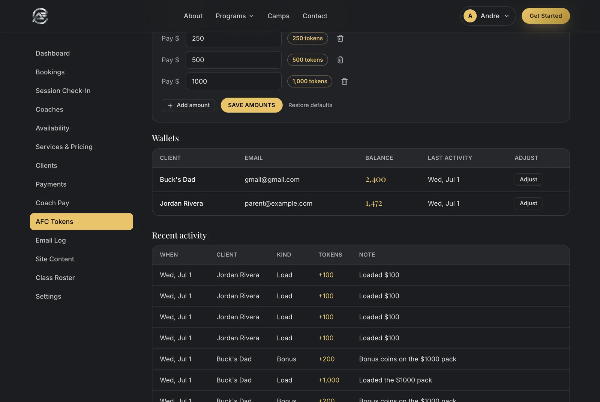

Know the platform like you built it.
This guide walks through every screen a parent, a coach, or an admin will ever touch. After reading it, anyone on the team should be able to answer any question a parent or coach asks. Use the search box on the left, or print the whole thing.
What this platform is #
One website, three surfaces. Everything runs on the same database, so a booking made anywhere shows up everywhere.
- The public site + parent portal: families browse programs, book sessions, load AFC Tokens, and manage their athletes at
afsoccer.club(currently the afcdemo Netlify site). - The admin Control Center at
/admin: dashboards, bookings, clients, payments, coach pay, emails, and site copy. What each person sees depends on their permissions. - The coach Session Check-In at
/admin/check-in: a phone-first screen where a coach taps who showed up after a session. That tap drives coach pay, loyalty rewards, and referral payouts.

Practice with these accounts on the demo site:
andre@afsoccer.club · demo1234 owner, sees everything
parent@example.com · demo1234 demo family (Jordan Rivera, athlete Mateo)
The demo site uses the live demo database. If you create test bookings or families to practice, start every name with ZZTest so they are easy to spot and delete afterwards. Better yet, practice with the seeded Rivera family.
Part 1The parent side
Creating an account & verifying email #
Parents can create an account three ways: from the Sign up page, inline while booking, or after a guest booking. All of them end in the same place: a family account that can book, pay with tokens, and track athletes.
From the Sign up page
- Click Get Started (or go to
/signup). - Contact: enter full name, phone, and email, then click continue.
- Verify: a 6-digit code is emailed. Type it in. The resend button unlocks after 60 seconds if it did not arrive.
- Password: choose a password, at least 8 characters. The account is created and the parent lands on a welcome page, already signed in.

The other two doors
- While booking: on the booking form's Details step, a new parent is offered "Create your AFC account" with a password field. They can also press "Just booking once? Continue as guest".
- After a guest booking: the confirmation page shows "Create your AFC account". One password and the booking, contact details, and optionally the athlete are saved to the new account.
Accounts created during booking skip the 6-digit code. Instead they get a welcome email with a confirm-your-email link, and the account page shows a banner with a resend button until they click it. Verification is not required to book or pay: it just proves the inbox works so future emails land.
A parent says the code never arrived. What do I tell them?
Wait 60 seconds and press resend, and check spam. On the demo site, see the sandbox note in Known limits: emails only reach the test inbox until the sending domain is verified.
Do parents need to verify email before booking?
No. Booking, paying, and tokens all work unverified. The banner on their account page nags gently until they confirm.
Can one account manage several kids?
Yes. A family account holds any number of athlete profiles, one wallet, and one rewards page.
Logging in & password reset #
Parents sign in at /login (the Log in link in the site header). A login lasts 30 days on that device before it asks again.


Forgot password
- Click Forgot password on the login page.
- Enter the account email. A 6-digit code is sent (60-second resend, same as signup).
- Type the code, then choose a new password (8+ characters). They are signed in right away.
A parent is locked out and email is not working. Can we reset it for them?
There is no admin "set password" button. The reset flow needs their inbox. On the demo, email is sandboxed, so use the seeded demo parent instead of real signups.
Does changing a password log out other devices?
Yes. A password change or reset invalidates older logins everywhere.
Is the admin login the same page?
No. Staff sign in at /admin/login. Same idea, separate door. See Dashboard.
Booking a session (the wizard) #
The Book a session flow is five steps: Service → Time → Coach → Details → Review. A progress bar on top lets parents jump back to any step they already finished.
- Service: pick the program. Cards show price, length, and a "What's included" panel. Elite formats carry an "Elite · by acceptance" badge: they can only be booked for an athlete who has been accepted into Elite.
- Time: pick a day on the calendar, then a time. Only days and times with real coach availability show up. Parents can book up to 6 months ahead.
- Coach: only coaches who are actually free at that exact time appear. If just one coach is available, this step is skipped automatically.
- Details: who is training (signed-in parents tap a saved athlete or "Someone else"), athlete age, parent contact info, optional notes, and the required waiver. New parents see the create-account offer here, with a guest option.
- Review: a summary with Edit links per row. "Continue to payment" places the booking and opens checkout.


Paying, and what happens after
- Checkout offers AFC Tokens (if the family's balance covers it), or card. Families with prepaid session credits from the old pack system can use those too.
- Paid bookings become CONFIRMED right away and the family gets a confirmation email plus receipt. An unpaid booking sits as a PENDING request until staff confirm or collect.
- The confirmation page (and email) includes an add-to-calendar link for Apple and Google Calendar.
Guest booking
No account is needed to book. A guest fills the same five steps, pays, and gets the same emails. Their confirmation page then offers to turn the booking into an account with one password. Until they do, staff will see the booking under Clients with contact info but no login.


Why can't a parent see a coach they wanted?
The Coach step only lists coaches free at the chosen time who also offer that service. Ask them to try another time, or book it for them from admin.
Why is a class missing from the list for their athlete?
Elite formats need an accepted athlete. Performance classes check age band and level: see Performance classes.
The time they wanted disappeared at the last step.
Someone else took the slot while they were filling the form. The wizard sends them back to the Time step to pick another. Nothing was charged.
Do guests really get no account?
Correct, until they set a password on the confirmation page or sign up later with the same email. The guest-account invitation email nudges them too.
AFC Tokens: the wallet #
One family balance for everything. 1 token = 1 dollar, always. No bonus tokens on bigger loads, no expiry, works on any program. Wallet lives at Account → AFC Tokens.


The rules parents ask about
| Loading | Quick amounts $100 / $250 / $500 / $1,000, or custom from $20 up to $10,000. Always 1 token per dollar. |
|---|---|
| Spending | At checkout, "Pay N tokens" shows whenever the balance covers the price. Tokens confirm the session instantly. |
| Expiry | Never. That is a selling point over the old session packs. |
| Cancelling | A parent can cancel any upcoming session from their account until its start time. If it was paid with tokens, the tokens go straight back to the wallet automatically, with a refund line in their history. |
| The 24-hour policy | Terms and the confirmation email say: give at least 24 hours notice to cancel or reschedule. A late cancel or no-show may forfeit the session or its tokens. |
| Elite rates | For accepted Elite athletes, session prices in tokens follow the family's unlocked rate tier instead of the sticker price. See the Elite journey. |
The system does not enforce the forfeit automatically yet. The online Cancel button works until the session starts and always refunds tokens in full. If a family cancels inside 24 hours and you decide the policy applies, handle it manually: cancel (or let them cancel), then remove the session's tokens with an adjustment in AFC Tokens (admin), and tell the family why. For a no-show, do not cancel: an admin can mark it cancelled after start, or the coach simply logs the athlete as absent at check-in.
Do bigger loads earn bonus tokens?
No, never. The old load-bonus ladder is gone. Bigger loads instead unlock cheaper Elite per-session rates for Elite families, and that is the only reward for loading more.
Can tokens be refunded to a card?
Not from the site. Cancellations refund to the wallet. Anything beyond that (cash-out requests) is a manual owner decision outside the platform.
Can a family go negative?
No. If the balance does not cover a price, the token option simply does not appear, and the page suggests loading or paying by card.
Where do parents see their history?
The wallet page lists every load, spend, refund, and reward line with dates and notes.
The Elite journey #
Elite is by acceptance, not by purchase. The road in is the $199 Assessment Pathway. The reward for commitment is a cheaper per-session rate, unlocked by wallet load size.
The journey, step by step
- Family applies on the Elite page and books the $199 Assessment Pathway.
- The athlete is assessed. Their status moves through: Applied → Assessment Pathway booked → Assessment complete, decision pending.
- Staff make the call on the athlete's profile: Accepted, Waitlist, or Not Yet Fit (routed to Performance instead, with pride intact).
- On acceptance, the $199 they paid converts to 199 tokens in the family wallet, once per athlete ever. Their first sessions are effectively pre-paid.
- Accepted athletes can now book Elite formats: Private, 2-Player, 3-Player, and 4-6 Player groups.
The rate ladder (per session, per athlete)
| Format | Drop-in | 4-pack tier | 8-pack tier | 12-pack tier |
|---|---|---|---|---|
| Private (1-on-1) | $120 | $105 | $95 | $85 |
| 2-Player Group | $180 | $75 | $70 | $65 |
| 3-Player Group | $225 | $60 | $55 | $50 |
| 4-6 Player Group | $240 | $50 | $45 | $40 |
A family's tier is set by their single largest wallet load: load $120 or more for drop-in rates, $420+ unlocks the 4-pack tier, $760+ the 8-pack tier, and $1,020+ the 12-pack tier. Loading ahead is the commitment signal, and the discount lives in the rate, not in bonus tokens.
The public Elite page shows only "from $X, as low as $Y" per format. The load thresholds ($120 / $420 / $760 / $1,020) are dashboard-only: families see their own tier and the next unlock on their wallet page. Do not quote thresholds on the landing page.


A parent asks: is the $199 assessment refundable?
It converts to 199 tokens if the athlete is accepted, so accepted families lose nothing. For waitlist or not-yet-fit outcomes there is no automatic conversion or refund: that is an owner decision case by case.
Who pays in a group session booked once?
One parent books and pays the whole group price to lock the slot (for example $180 for a 2-Player drop-in), and the families settle up between themselves. Any package tier brings the per-athlete rate down instead.
Does the tier ever expire or drop?
No. It is based on the biggest single load the family has ever made.
Does acceptance send the family an email automatically?
Not yet. A beautiful elite-accepted email exists but is not wired to the status change. Call or email the family personally when you accept an athlete.
Performance classes #
Six weekly classes: three age bands, each with a Beginner and an Advanced class. Flat pricing, no acceptance needed, book in seconds.
| Age band | Beginner | Advanced |
|---|---|---|
| Youngers, 8-10 | First Touch | Dribbling & Moves |
| Intermediate, 11-13 | Passing & Receiving | Speed of Play |
| Olders, 14+ | Finishing & Fundamentals | Game Speed |
Pricing: $40 drop-in, or an 8-pack at $280 which works out to $35 per session. (The 8-pack is displayed today but bought offline until card payments go live.)
Who can book which class
- Age band is strict when we know the athlete's birth date: an 11-year-old cannot book First Touch (8-10). The parent gets a calm message pointing to their band's classes.
- If we do not know the date of birth, Beginner classes allow the booking and staff fix the profile later. No families blocked at the door for missing paperwork.
- Advanced classes need placement. Only staff can flag an athlete as Advanced, on their profile under Clients. Parents cannot self-select it. That includes Elite candidates routed to Performance: set their level and they land in the right class.


A parent insists their 10-year-old is advanced. What do they do?
They ask us. A coach or admin sets Performance level to Advanced on the athlete's profile, and Dribbling & Moves opens up for them. See Clients.
When do classes meet?
The cards currently say "weekly day and time announced soon". Real days and times are pending. Do not promise a specific evening yet.
Can a family use tokens for classes?
Yes. Classes cost 40 tokens at checkout like any other session. Elite rate tiers do not change class prices: those are Elite-only.
Rewards & Refer a Family #
Loyalty is automatic: sessions count themselves, tokens land by themselves, and referring a family pays both sides. Parents see it all at Account → Rewards.
Loyalty tokens (per athlete)
| 8 completed sessions | +25 tokens, automatically |
|---|---|
| 18 completed sessions | +50 tokens |
| 40 completed sessions | +100 tokens |
Each milestone pays once per athlete. "Completed" means the session actually happened: the coach checked the athlete in, or staff marked the booking Completed. The My Progress bar shows exactly how far each athlete is, for example "1 of 8 sessions: 7 to go until 25 tokens".
Milestone perks (separate from tokens)
- AFC jersey at 10 completed sessions.
- AFC training booklet at 20 completed sessions.
- Online video session with Coach Sebi at 500 tokens spent.
- AFC merch drop at 1,000 tokens spent.
Perks are earned, not spent: they never touch the wallet balance. When one unlocks, hand it to the athlete at a session. The thresholds are placeholders until Andre finalizes them.
Refer a Family
- The parent opens Rewards and copies their personal invite link (it looks like
/signup?ref=CODE). - The new family signs up through that link and books.
- When the new family completes their first paid session, the referrer gets 100 tokens and the new family gets 25 tokens. Automatically, no forms.
Staff can also record a referral by hand (for word-of-mouth cases) in AFC Tokens (admin).


Why has the referral not paid out yet?
It pays when the referred family's first paid session is completed, not when they sign up or book. Check the referral tracker in AFC Tokens: it shows pending versus paid.
Do cancelled sessions count toward loyalty?
No. Only completed sessions count. Pending and confirmed ones do not count until they happen.
Can both rewards stack in one wallet?
Yes. Loyalty and referral tokens are normal tokens: same wallet, same spending power, never expire.
Recurring weekly slots #
A family can hold the same weekly time with the same coach, month after month. Staff set it up; the parent just decides each month whether to keep it.
How it works
- Staff create the series from the admin New booking form by ticking "Repeat weekly: lock this slot for the month". Every remaining week that month books at once, tokens auto-deduct, and the family gets one confirmation email listing all dates.
- On the parent's account page a Recurring slots card appears: service, weekday and time, coach, and how far it is booked.
- In the third week of each month (the 15th onward), the system opens a 48-hour rebook window and emails the parent: "Keep {athlete}'s weekly slot? 48 hours to rebook."
- The parent clicks Keep my slot and next month books automatically, tokens deducted at their usual rate. Or they click Let it go.
- No answer within 48 hours means the series ends quietly and the time goes back on the public calendar.

What if the wallet cannot cover the whole next month?
The dates still book so the slot is not lost, but they are marked unpaid, and staff follow up to collect. Nothing silently drops.
What if one week clashes with something already booked?
That week is skipped; the rest of the month books normally.
Can a parent start a recurring slot themselves?
Not yet. It is created by staff, usually after a conversation. Parents manage it from their account once it exists.
When exactly does the reminder email go out?
The daily automation runs at 7:00 in the morning Pacific. From the 15th, any series booked only through the current month gets its 48-hour window opened that morning. See the two daily automations.
Athletes, waiver & account management #
The account page (/account) is the family home: athletes, upcoming and past sessions, wallet and rewards shortcuts, and any recurring slots.


What a parent can do here
- Athletes: add or edit profiles. Name, relation to the account holder, date of birth, photo, sport, position, dominant side, skill level, current team, goals, allergies, medical notes, and an emergency contact. Coaches see what they need to run a safe session.
- Archive an athlete who stopped training (it hides them without deleting history).
- Sessions: see upcoming and past bookings with payment state, and cancel an upcoming one (allowed until its start time; token payments refund instantly).
- Waiver: signed per booking during checkout. The modal forces a full read: the I agree button unlocks only after scrolling to the end. The signed date shows on the athlete's file in admin.
- Email banner: unverified accounts see a resend-verification banner here.
Why does age matter so much on the profile?
Date of birth drives Performance age bands. Without it we let Beginner bookings through, but Advanced placement and strict banding work best with a real birth date.
Can parents change their email or phone?
They edit contact details on their account. If something is stuck, staff can update the client record from admin.
Where do they re-read the waiver?
The Athletic Waiver link in the site footer, any time.
Part 2The admin Control Center
Dashboard #
Staff sign in at /admin/login. The dashboard is the business at a glance, and every card is clickable.
- KPI cards: upcoming sessions (confirmed + pending), revenue this month, revenue all time, total clients, and a "needs attention" count.
- Quick actions: New booking, Add coach, Edit content, Manage availability.
- Needs attention: pending requests with one-tap Confirm or Decline, and unpaid sessions with Mark paid.
- Today: everything happening today, and a recent-bookings activity feed below.

What creates a "pending request"?
Any booking that is not paid yet: a parent who chose to book without paying online, or an admin booking created without marking it paid. Confirm it to lock the slot, or Decline to release it.
Why do the revenue numbers not match the payout email?
Revenue counts money in from families. Coach Pay counts money out to coaches. Different worlds: see Coach Pay.
Bookings #
Every session in the business, as a filterable list or a calendar. This page is where you create, confirm, reschedule, and cancel.


The four statuses, and what each one does
| PENDING | A request. The slot is held but not confirmed. Shows amber, and appears in "needs attention". Confirm or Decline it. |
|---|---|
| CONFIRMED | On the calendar, slot locked. This is where paid bookings start. |
| COMPLETED | The session happened. Set automatically when a coach checks the athlete in, or manually by staff. This is the trigger status: it counts toward loyalty milestones and releases referral payouts. See what Completed triggers. |
| CANCELLED | Slot released back to the public calendar. If the booking was paid with tokens, they refund to the wallet automatically, and the family gets a cancellation email. |
Creating a booking by hand (phone or walk-in)
- Click New booking (here or on the dashboard). The form is profile-first: pick the athlete. No profile yet? Add the family under Clients first. The form shows the family's token balance and Elite tier as you go.
- Pick the service. For group formats you can add more athletes into the same slot, up to the service's capacity.
- Pick date and time from real availability across all coaches for that service, then the coach (auto-selected if only one is free).
- Optional notes, visible to the assigned coach on their check-in screen.
- Payment options: Pay with family tokens (auto-deducts), Mark as paid (cash or e-transfer), and Send confirmation email if the family has an email on file. Leave both payment boxes unticked to create it as a pending request.

Recurring, reschedule, group
- Repeat weekly: tick the checkbox in the same form to lock the slot for the whole month. See Recurring weekly slots for the monthly renewal loop.
- Reschedule: open a booking and choose Reschedule. Pick a new time (and coach if needed) for the same service, with a "notify the family by email" checkbox.
- Group bookings show one row per athlete in the same slot, so each family's payment and attendance stay individual.
A parent calls to cancel. Fastest path?
Find the booking (search by name), open it, set status to Cancelled. Token payments refund themselves and the cancellation email goes out. For card-paid demo bookings, also refund the payment under Payments.
Can I book someone with no athlete profile?
Not from the admin form: it is profile-first by design. Add the family and athlete under Clients (takes a minute), then book. Parents booking through the public wizard can still just type a name.
Should I mark old sessions Completed by hand?
Prefer coach check-in: it also computes coach pay. If a coach forgot, use the Unlogged sessions panel in Coach Pay and log it on their behalf: attendance, pay, and rewards all happen properly.
Session Check-In (the coach flow) #
Built phone-first. After a session ends, the coach taps who actually showed up, sees their pay compute live, and confirms. That one tap drives coach pay, completion status, loyalty, and referrals.


The flow
- The coach signs in at
/admin/loginon their phone and lands on Session Check-In. They only ever see their own sessions. - Sessions from today and the last 7 days are listed. A session can be checked in once it has finished ("Starts at 3:00 PM, check in once it's done").
- Tap the session, then tap each athlete who attended. The list starts empty on purpose: attendance is a positive action, never an assumption.
- The button shows the result live: "Confirm · 2 attended · $45". Tap it. Done.
- Made a mistake? Fix attendance stays available for 30 minutes (the correction window), then the log locks.
The special cases
- Nobody showed up: the button becomes "Nobody showed up" and asks for a second tap. The session logs as flagged, $0. An admin reviews flagged sessions in Coach Pay and decides what, if anything, gets paid.
- Shadow time (paid standby): on-site between sessions but not coaching? The coach logs it here: pick the day, set hours in quarter-hour steps, and it pays at their flat shadow rate (Lucas: $25/hr). Deletable within the correction window.
- What attendance does to the booking: attended athletes' bookings flip to Completed (which counts loyalty and referrals). Un-attended ones stay as they were, so staff can follow up.
Coach pay follows real attendance, not the booking sheet. Three booked, two showed: the coach is paid the 2-athlete rate. The rate snapshot is taken at check-in time, so later rate changes never rewrite past pay.
A coach missed the 30-minute window with a mistake inside. Now what?
An admin fixes it in Coach Pay: open the session's Detail, override attendance or duration with a note. Overrides recompute from the original check-in rates.
A coach forgot to check in entirely.
The slot appears in Coach Pay's "Unlogged sessions" panel for 60 days. An admin logs it on the coach's behalf with the same attendance flow and the coach's own rates.
Can a coach see another coach's sessions or pay?
No. Coach logins are scoped to their own data, and the Coach Pay section is never granted to coaches. See permissions.
Can the correction window be longer than 30 minutes?
Yes, it is a setting: Coach Pay → Payout settings → correction window.
Coaches #
The public coaching roster and each coach's login live here. Cards drag to reorder; the order is what the public site shows.


Creating a coach login
- Open the coach's card and turn on login access with their email and a starting password.
- The Coach permission template applies automatically: manage their own check-in and availability, view their own bookings and clients, nothing else, own data only.
- Hand them the email and password. They sign in at
/admin/loginon their phone, and Session Check-In is right there.
What does the Active toggle actually do?
Active coaches appear on the public site and in the booking wizard's coach step. Inactive coaches keep their history, availability, and pay profile, but the public never sees them. Lucas and Ayman are seeded inactive until Andre says otherwise.
Which services can a coach be booked for?
Only the ones ticked on their card. The wizard's coach filter starts from that list, then narrows to who is free.
Do coach logins see money?
They see their own live pay preview at check-in and their own period total. They cannot open Coach Pay, Payments, or anyone else's numbers.
Availability #
When each coach can be booked: weekly hours plus days off. The public wizard's calendar is built from this, minus existing bookings.

- Weekly hours: time blocks per weekday, per coach. The demo seed is Mon-Fri 3:00 to 7:00 PM and Saturday 9:00 to 1:00.
- Days off (blackouts): single dates that override the weekly pattern, for holidays or travel. If a blackout lands on a day with existing bookings, the page warns you so you can reschedule the families.
- Coaches with logins manage their own hours and days off from this same page; they cannot touch anyone else's.
Why is a time not showing in the public wizard?
Either the coach has no availability block covering it, a blackout hides that day, the slot is already booked to capacity, or the coach does not offer that service. Check in that order.
Half a day off?
Trim the weekly hours for that weekday, or add the blackout and rebook only the affected sessions. Blackouts are whole days.
Services & Pricing #
The catalog: everything bookable, with price, duration, and capacity. Booking pages, checkout, and token prices all read from here.

- Each service has a name, kind, duration, price, capacity, and description. Capacity 1 is a private; more than 1 makes it a group with that many spots per slot.
- Kinds: Private, Group, Camp, Foundations. The kind drives how it behaves in class rosters, client buckets, and coach pay (camps pay a flat coach rate).
- Elite formats are acceptance-gated, and Performance classes carry their age band and level. Those flags come with the seeded catalog; day-to-day edits here are name, price, duration, capacity, description, and active.
- Price changes apply to new bookings only. Existing bookings keep the price they were made at.
Can I retire a service safely?
Toggle it inactive. History stays intact, nothing new can book it. Deleting is not the way.
Where do Elite per-session token prices come from?
Not from this page. Elite formats price from the family's rate tier at checkout: see the Elite journey. The sticker price here is the drop-in rate.
Clients & Leads #
Every family, bucketed by where they are in the AFC journey. Names open a full profile in a new tab, so you can keep the list open while you work.


The buckets
| All | Everyone with an account or a booking. |
|---|---|
| Foundations | Families with Foundations program bookings. |
| Performance | Families booked into the six classes (or legacy open groups). |
| Elite | Families with Elite-gated bookings, or any athlete anywhere in the Elite journey (applied through accepted or waitlisted). |
| Not booked | Accounts with zero active bookings: your re-engagement call list. |
Inside a profile
- Contact details and their athletes, each with Elite status and Performance level controls.
- Elite decisions: set the athlete's stage (Applied, Assessment booked, Assessment complete, Accepted, Waitlist, Not Yet Fit). Choosing Accepted offers the $199-to-199-tokens conversion, which can only ever happen once per athlete.
- Performance placement: flip an athlete to Advanced to unlock the advanced class in their age band.
- Wallet: balance, full token history, and a manual adjustment button (see AFC Tokens).
- Bookings (upcoming and past), coaches they have trained with, reward tokens earned, products, and the waiver date.
- Coach notes ride along on bookings (the notes field in the booking form) so the assigned coach sees context at check-in.
Leads
New-family signals from the contact form, Elite applications, the path finder quiz, signups, and guest bookings collect at New leads (linked from the Clients page). Each shows source and details, so you can follow up before they become clients.

How do I add a brand-new family by phone?
Clients → add the family with contact info, add the athlete, then book from Bookings. The parent can claim online access later; their history is already attached.
Who should work the "Not booked" bucket?
Whoever owns re-engagement that week. It is exactly the list of families who know AFC but have nothing scheduled.
Accepted the wrong athlete by mistake?
Set the status back. The 199-token conversion, if it already ran, must be unwound manually with a token adjustment. It is one-per-athlete forever, so fix it before it is spent.
Payments & refunds #
Every payment in one list: filter by status and date, search by family, export CSV. Totals for gross, refunded, and net sit on top.

- Where payments come from: token payments (the wallet), demo card payments, and manual "mark as paid" entries for cash or e-transfer.
- Mark paid: on any unpaid booking (dashboard, bookings list, or here). Use it when money changed hands outside the site.
- Refund (card and manual payments): the Refund button flips the payment to Refunded and cancels the booking (unless the session already happened), and the family is emailed.
- Token refunds are not on this page: cancelling a token-paid booking refunds the wallet automatically. For anything unusual, adjust the wallet directly in AFC Tokens.
Card checkout is simulated until Stripe lands. Any card number "succeeds" (there is no real charge), and a card ending in 0000 plays the decline path. Say "demo checkout, no real charge" when walking anyone through it, and treat real money as cash/e-transfer plus Mark paid for now.
A family paid cash for a pending booking. What do I click?
Mark paid on that booking (dashboard "Unpaid sessions" is fastest). It becomes confirmed and counts in revenue.
Refund a completed session?
The refund flow keeps a completed booking completed (the session happened) while refunding the money. Decide case by case; for token payments use a wallet adjustment with a note.
Coach Pay #
The whole payout machine: rate profiles per coach, every checked-in session priced, a twice-monthly payout email, and the tools to correct honest mistakes. Owner (and Sahand) only; coaches never see this page.
How a coach's pay is computed
| Regular session | Base rate + (athletes attended × per-athlete bonus), capped. A 1-athlete session pays base only. Lucas's reference profile: $35 base, +$5 per athlete, $80 cap. So 1 athlete $35/hr, 2 → $45, 4 → $55, 8 → $75, 10+ caps at $80. |
|---|---|
| Group bonus off | Flat base regardless of headcount: the Foundations class model. |
| Camp | Flat camp rate (bonus only if that coach's camp-bonus toggle is on). |
| Shadow time | Flat shadow rate for paid standby, logged by the coach in quarter-hours. Lucas: $25/hr. |
| Pay per session | Hourly rate × session length. A 90-minute session at $55/hr pays $82.50. |
Attendance is the input, not bookings. Rates are snapshotted at check-in, so changing a coach's rates later never rewrites history: changes apply to future check-ins only.


The payout email
- Fires automatically on the 15th (covering the 1st to the 15th) and the 30th or last day of the month (covering the 16th to month-end), at about 8:30 in the morning Pacific.
- Goes to the payout recipient (default
dre@afsoccer.club) with an optional CC (Sahand's address, once set). One table per coach grouped by session type and rate, plus a grand total. Andre pays manually from it; the system never moves money. - Late additions: a session checked in after its period's email already went out is not lost. It rides the next email in its own "late additions" section. Nothing double-reports, nothing disappears.
- Buttons on this page: Send test to me (a preview to your own inbox, does not mark anything as reported), Send now for real (guarded, marks sessions reported), and Print for a PDF copy.
Fixing things
- Flagged sessions (zero attendees) wait in the sessions table for an admin decision.
- Override: open a session's Detail to correct attendance or duration with a note. Pay recomputes from the check-in-time rates.
- Void: kills a bad log and frees the slot to be re-logged. Blocked once the session has been payout-emailed, to keep the books honest.
- Payout settings: recipient, CC, and the coach correction window (default 30 minutes).
Why is a coach's session missing from the payout preview?
Either it was never checked in (look in Unlogged sessions), it is flagged at $0 awaiting review, or it was checked in after the email went out and will ride the next one as a late addition.
We changed Lucas's rates mid-period. What happens?
Sessions already checked in keep their snapshot rates; new check-ins use the new rates. The payout email shows them as separate honest rows.
Why will the other coaches' profiles not activate?
Every rate field must be filled first, on purpose. Andre still owes rates for Sebi, Sebass, Ayman, Sergio, and Mikey: see Known limits.
Does the payout email pay anyone automatically?
No. It is a report. Andre pays coaches manually however he pays them today.
AFC Tokens (admin) #
The reward engine's control room: the referral tracker, every reward token issued, load amounts, and manual balance adjustments.


- Referral tracker: each referred family with status "Pending first session" or "Paid out". The payout (100 + 25) fires by itself when their first paid session completes.
- Record referral: for word-of-mouth cases with no link. Pick the referrer and the new family; the tracker takes it from there.
- Reward tokens issued: an audit list of every referral and loyalty grant, with family, amount, and trigger.
- Load amounts editor: change the quick-pick amounts parents see. Whatever you enter stays 1 token per dollar; the editor cannot create bonuses.
- Manual adjustments live on the client profile (Clients → family → wallet → Adjust): add or remove tokens with a note. Use it for goodwill, corrections, late-cancel forfeits, and CoachIQ migration credits.
A family says "we referred the Smiths, where are our 100 tokens?"
Open the tracker. If the Smiths show Pending, their first paid session has not completed yet. If they are not listed at all, the link was not used: record the referral manually and it will pay on their next completed paid session.
Can I hand out tokens as a goodwill gesture?
Yes: wallet adjustment on the client profile, with a note that says why. It shows in their history like any other line.
Email Log & templates #
Every email the platform sends is logged here with its delivery status. Six core templates are editable in place; the full designed set lives in the email gallery.


- The log shows the last 100 sends: sent, failed, or simulated (when no email key is configured). Failures show the provider's error, which is how you spot the sandbox limit.
- Editable here: booking confirmation, receipt, session reminder, cancellation, email verification, and password reset. Merge fields like
{{customerName}}fill themselves. - Everything else (welcome, guest account, Elite set, rewards set, payout, and more) ships from the designed Royal Crest set. Review every one of the 34 designs in the email review gallery, with each email's trigger and copy.
- There is no "compose an email" button: everything is event-driven. See which emails go out, and when.
A parent says they got nothing. First check?
This log. If the row says failed with a sandbox error, that is the known Resend limit on the demo (only the test inbox receives). If there is no row at all, the event did not fire: check the booking or account state.
Can we change the wording of the confirmation email?
Yes, right on this page. Keep the merge fields intact and send yourself a test booking to see it live.
Site Content #
The marketing site's words and pictures, editable without a developer. Homepage, About, Booking, Pricing, Contact, Elite, Foundations, and shared site-wide copy.

- Each page is broken into sections: heroes, headlines, body copy, stats, testimonials, pathway cards. Images upload right in the editor.
- Saving publishes instantly: the public site updates on the next page load. No deploy, no waiting.
- Clearing a field back to empty restores the built-in default copy for that spot.
- Coaches, services, prices, business contact, and email templates are managed on their own pages, not here.
Can I break the site from here?
Not structurally. You are editing words and images inside a fixed design. Worst case, clear the field and the default comes back.
Who should have this?
Anyone trusted with the public voice. It is a permission section like any other, so a staff login can have it or not.
Class Roster #
Who is coming to class: every Foundations and Performance class instance with its enrolled athletes, ages, parent contacts, and booking status.

What shows up here versus Bookings?
Roster only shows class-type sessions (Foundations and the six Performance classes), grouped per class meeting. Bookings shows everything individually.
Mikey wants his Foundations list for Saturday. Fastest path?
This page. It is grouped and ordered by start time, with parent phone and email right on the row.
Settings & the permission model #
Business settings plus the team's admin logins. The permission model is simple: an owner sees everything; staff see exactly what you grant.


How permissions work
- Roles: OWNER (Andre) has everything, always. STAFF logins carry a permission set. Parents are clients and can never reach
/admin. - Sections: each admin area (bookings, check-in, coaches, availability, services, clients, payments, coach pay, tokens, emails, content) is granted as none, view, or manage.
- Scope: all data, or own data (a coach sees only sessions and clients tied to them).
- Templates: Coach = own check-in and availability, view own bookings and clients, nothing else. Front desk = manage bookings and clients, view availability, services, payments, and coaches, across all data. Or hand-pick sections for a custom role.
- Coach Pay is deliberately never in the Coach template. Grant it only to Andre and Sahand.
- Everyone can change their own password here (staff see "My account" instead of full Settings).
What should Sahand's login be?
Front desk template plus Coach Pay (view or manage as Andre prefers) is the intended shape: bookings, clients, and the payout machinery, without site content or settings unless wanted.
What does Mikey need?
If he only runs Foundations sessions: a coach login from the Coaches page (check-in plus his own availability). Add Class Roster visibility by granting bookings view if he wants his lists online.
Can two owners exist?
Yes, the team panel can promote another owner. Keep it to people who genuinely need everything.
Part 3Behind the scenes
Which emails go out, and when #
Every design exists in the email review gallery (all 34, with copy and triggers). Here is what actually fires automatically today.
| Moment | |
|---|---|
| Signup starts | Email verification (the 6-digit code) |
| Account created | Welcome (or "Welcome + first booking" if they created it while booking and paid) |
| Guest books | Booking confirmation + receipt, plus a "create your account" invitation |
| Booking paid | Booking confirmation + receipt (with the add-to-calendar link and the 24-hour policy) |
| Booking cancelled / refunded | Cancellation notice |
| Password reset requested | Password reset code |
| Recurring month books | One confirmation listing all the month's dates and tokens spent |
| Rebook window opens | "Keep the slot? 48 hours" reminder |
| 15th and 30th, 8:30 AM Pacific | Coach payout summary to Andre (CC Sahand once set) |
Built and designed but not yet automated (do not promise these): the 24-hour session reminder, post-session thank-you series, win-back, low balance, tokens-loaded and tokens-returned receipts, Elite acceptance, assessment follow-up, contact auto-reply, and the subscription pair (on hold with the auto-reload decision).
Parents ask if they get a reminder before the session.
Not yet, and do not promise it. The reminder email is designed and waiting on its automation. The confirmation email's add-to-calendar link is the current answer.
The two daily automations #
Two jobs run every day on Netlify, both verified live. Times are Pacific.
| 7:00 AM daily | Recurring slots: from the 15th, opens the 48-hour rebook window for any series booked only through this month and sends the reminder email. Every day, it also quietly ends any series whose window expired and releases those times to the public calendar. |
|---|---|
| 8:30 AM daily | Coach payout: checks whether today is a send day (the 15th, or the 30th slash last day of the month). On send days it builds the payout tables, emails them once, and stamps the included sessions as reported. Other days it does nothing. |
What happens if a job fails one morning?
Both are safe to run again: the payout dedupes against the email log, and the recurring job re-checks state. The next successful run picks everything up. If something looks stuck, tell Trevor.
What marking a session "Completed" triggers #
Completed is the platform's payday moment. It fires whether the coach checked the athlete in or staff set the status by hand.
- Loyalty count: the athlete's completed-session total ticks up. Crossing 8, 18, or 40 automatically drops 25, 50, or 100 tokens into the family wallet, each milestone once per athlete.
- Referral payout: if this family was referred and this is their first completed paid session, the referrer gets 100 tokens and this family gets 25. The referral flips to Paid out in the tracker.
- Coach pay: only check-in (or an admin logging on the coach's behalf) creates the priced session log. Flipping a status by hand does not pay a coach, which is why the Unlogged panel exists.
Let check-in do the completing. It gets attendance, coach pay, and rewards right in one tap. Set Completed by hand only when you know the session happened and coach pay is already handled.
Part 4The honesty section
Known limits: what not to promise yet #
The platform is feature-complete for v3, and a few edges are intentionally waiting on decisions or third-party setup. Knowing these keeps every conversation honest.
| Card payments | Demo mode. No real card is ever charged (a number ending 0000 simulates a decline). Real money moves by tokens loaded via cash or e-transfer, and Mark paid. Stripe is the planned fix. |
|---|---|
| Outbound email | Sandbox-limited until the sending domain is verified with Resend. On the demo, only the test inbox actually receives; other addresses log as failed in the Email Log. From-address still shows the Resend onboarding domain. |
| Coach rates | Only Lucas's pay profile is filled and active (his rates are the worked reference). Sebi, Sebass, Ayman, Sergio, and Mikey wait on Andre's numbers, and their sessions cannot be pay-logged until then. |
| Session reminder emails | Designed, not yet automated. Do not promise "you'll get a reminder the day before". |
| Elite acceptance email | Designed, not wired. Acceptance is a personal call or email from the team today. |
| Performance class schedule | Class cards say "weekly day and time announced soon". Days, times, and the 8-pack purchase flow (waits on Stripe) are pending. |
| Perk thresholds | Jersey at 10 sessions, booklet at 20, Sebi video at 500 tokens spent, merch at 1,000: placeholders until Andre confirms. |
| Missed-emails inbox | Replies to our emails land in the regular inbox, not in the admin. The in-admin inbox and direct reply are deferred pending an inbound-email decision. |
| Google Calendar | No two-way sync. Every confirmation email has an add-to-calendar link, which covers most asks. |
| Subscriptions / auto-reload | On hold pending the bonus decision. Nothing to sell yet. |
The demo database is shared: whatever you create while practicing, prefix it with ZZTest and delete it after.
Part 5Quick reference
Cheat sheet & key numbers #
| Demo owner login | andre@afsoccer.club / demo1234 at /admin/login |
|---|---|
| Demo parent login | parent@example.com / demo1234 at /login |
| Tokens | $1 = 1 token, flat, never expire. Loads: $100 / $250 / $500 / $1,000 / custom $20 to $10,000. |
| Elite ladder | Private 120 / 105 / 95 / 85 · 2P 180 / 75 / 70 / 65 · 3P 225 / 60 / 55 / 50 · 4-6P 240 / 50 / 45 / 40 (drop-in / 4-pack / 8-pack / 12-pack, per session) |
| Elite tier unlocks | Largest single load: $120 / $420 / $760 / $1,020. Dashboard-only numbers. |
| Assessment | $199, converts to 199 tokens on acceptance, once per athlete ever. |
| Performance | 6 classes (bands 8-10, 11-13, 14+; Beginner and Advanced each). $40 drop-in, 8-pack $280 ($35/session). Advanced needs staff placement. |
| Loyalty | 8 / 18 / 40 completed sessions → 25 / 50 / 100 tokens, per athlete, automatic. |
| Referral | 100 to the referrer, 25 to the new family, on the new family's first completed paid session. |
| Recurring window | From the 15th: 48 hours to keep the slot, then it releases. Reminder at 7:00 AM Pacific. |
| Coach pay (Lucas ref.) | $35 base +$5/athlete, $80 cap · shadow $25 · camp $35. 1 athlete = base only. |
| Payout email | 15th (1-15) and 30th/last day (16-end), ~8:30 AM Pacific, to dre@ (CC Sahand when set). |
| Correction window | 30 minutes after check-in (editable in Coach Pay payout settings). |
| Cancellation policy | 24 hours notice per terms; online cancel refunds tokens until start time; late-cancel forfeits are a manual staff step today. |
| Booking horizon | Parents can book up to 6 months ahead. Login lasts 30 days. |
| All emails | afcemails.netlify.app: all 34 designs, triggers, and copy. |